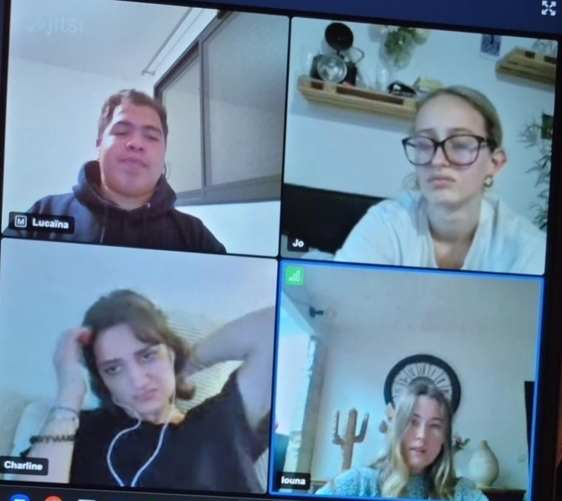
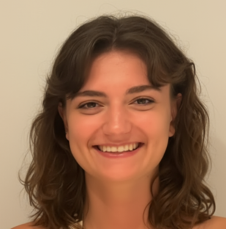

Projet (Problématique)
L'électroencéphalographie (EEG) manque de standardisation déontologique. Le projet européen EEG101 vise à instaurer un cadre robuste.
Notre réponse : Un monde virtuel gamifié sous WorkAdventure pour sensibiliser les scientifiques aux trois axes du manifeste :
- Validité scientifique
- Démocratisation des savoirs
- Responsabilité socio-environnementale

Méthodologie : Conception Centrée Utilisateur
Observation
Identification des points de blocage : manque de guidage global, peur de l'erreur en contexte pro, visibilité de l'espace.
Entretien
Rencontre avec le CEO de WorkAdventure pour explorer les possibilités techniques (PNJ, injection de code, silent zones).
Questionnaire
Évaluation de la map "test" auprès de profils scientifiques variés pour affiner le tutoriel d'accueil.
Notre Équipe

Charline Ingrand

Louna Morlans
Josépha Pfleger

Lucaïna Rakotomalala
Outils Techniques
- WorkAdventure : Plateforme de monde virtuel 2D.
- Tiled : Éditeur de cartes pour la conception des niveaux.
- Genially : Pour les mini-jeux interactifs et le contenu éducatif.
Gestion de Projet
Réunions bi-mensuelles avec les clients (CNRS) et tuteur (ENSC). Utilisation de Google Drive pour le partage des livrables et rapports.
Engagement DDRS
Le projet Manifesto GameAdventure s'inscrit dans une démarche de Responsabilité Sociétale et Environnementale :
- Écologie : Réduction de l'empreinte carbone grâce à l'organisation de conférences virtuelles mondiales.
- Social : Démocratisation des savoirs via un accès libre et inclusif à la formation scientifique.
- Éthique : Sensibilisation à l'intégrité des données et à la déontologie en recherche neuroscientifique.